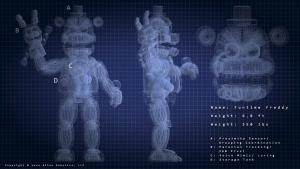
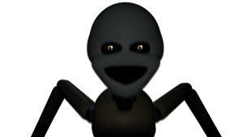
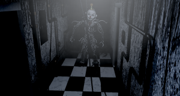
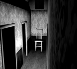
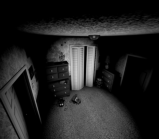
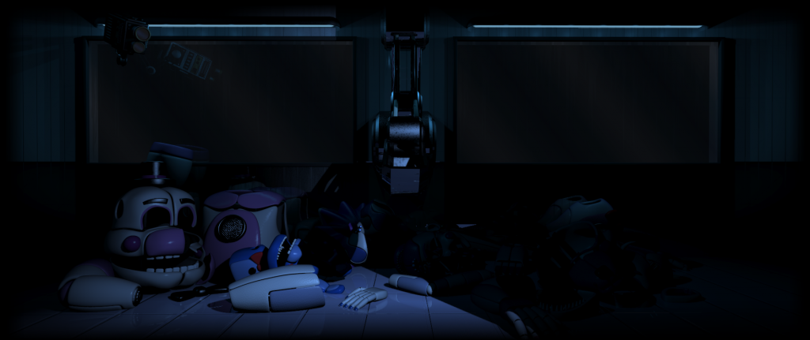

If you see any issues, please do make us aware via our Contact Form.
Thank you for browsing FNaFLore.com, we hope you enjoy the improvements that are coming to the site!
by Chica's hips!

My review of FNaF: Sister Location
I thought I’d share my raw thoughts on Sister Location in full, now the dust has settled, the smoke has cleared and the texture dump has dropped.
I will separate the review of Sister Location into two parts, one for gameplay, and one for plot. I feel it’s exceedingly important to discuss these separately.
After this, I will lay out the future for FNaFLore post-SL, what is being planned for the next few months and what will be done in the coming months.
The Gameplay
When Sister Location came out, I immediately played this one. I’ll be open, in that when I started FNaFLore, I had not played FNaF extensively. I had seen a lot of LPs, and those drew me in. since then, I’ve bought all the games and tried them all. That said, for this one and FNaF World, I bought and played it on the same day, hunting for easter-eggs.
I’ll go on a per-night basis, and rattle off my thoughts on it.
Night 1
Night 1 has very little, if no, actual gameplay. it’s as disappointing night. It’s all plot setup, disregarding any notion that it is a video game. Disappointing.
Night 2
The first gameplay comes in the form of the sliding door. I find it interesting, though misused. I feel the holes could have played a much larger role. As it is, I stared at one of those baby dwarfs for ages, with no repercussions that I could see.

The door sliding is a large shame in it’s implementation. you can’t drag it with the mouse, you can only hold it, leading to confusion in how the gameplay works. I managed to beat it the first night, but only barely. The door was very close to being too-open. This is an ongoing theme in SL, and it’s the largest flaw. I’d say, gameplay-wise, SL is quite easily the weakest when it comes to explanation. Death is inevitable. You are unable to complete this game blind without dying, a concept I find terribly flawed. Practically, this means the player would be doomed to die in-game, as he doesn’t have the knowledge of his past deaths.
After this, you have the sequence where you need to sneak through Ballora’s room. I actually quite enjoyed this part. I would have loved for that concept to be expanded.
Then, we get to the Breaker room. This one I didn’t get. I beat it, but it felt like all I had to do was spam a button, and quickly charge things up. Very little challenge, but also far too randomised in how it works. At least, that’s how I felt with it. I like the concept, but I feel the method of “charge-thing, spam voice until green, repeat” etc. did not do the game favours. Again, the lack of gameplay explanation was a flaw. I’d like for this idea to be expanded and polished. It has potential, but Scott’s implementation felt lackluster and randomised. There was no skill involved.
Night 3
This is where things started to go downhill, and I started losing my mind with the game.
The walk through Funtime Foxy was significantly less enjoyable than Ballora’s without any instructions. The best I could do was semi-spam the flash as I walked along. I didn’t like how this part of the game felt at all. Once again, we see the pattern. Little to no explanation to gameplay.

{kind=link}
Bonnie can go suck a dick, I’ve decided. With no explanation, Bonnie can jumpscare you, and you have no idea how to deactivate him. What is perhaps the most frustrating part though, is that to retry this level, you need to go through the previous rough section of Funtime Foxy. The concept of having to go through Funtime Foxy each time because a mechanic was not explained properly is not fun. I almost stopped the Steam stream I had accidentally become a host for at this level. I had to look up Dawko to solve this one. I will once again point out the reoccurring flaw of this game, which is the instructions. Once again, nothing to help you. All guesswork.
Also, how the hell can a hand puppet overpower a grown man. Kick it’s face in and move on. I want to hear Scott’s argument on this. I want to hear a justification of what is a metal hand-puppet having the strength to overpower a grown man.
I didn’t have too much of a problem with the scripted death, though I’d love for the setup to have been different. Actually create a unique death, don’t reuse the failed death. Something to show that the situation was unique. That said, I must also question, why didn’t you just move onto night 4 in the first Funtime Foxy section? Like most of the instructions, that detail is omitted from the game.
Night 4
This night is bullshit. Utter bullshit. I won’t hold back on this night because fuck this night.

Night 4 is a night where you need to wind up Springlocks, while stopping midget puppets from climbing the sides of your face. Don’t mind the puppets crawling into the suit.I mean, this is my first contention. There are puppets crawling in your suit and you’re meant to ignore them, in favour of the puppets outside of the suit that’re just casually using you as a climbing frame. They’re not hurting anyone. Why the hell are they dangerous, but the ones snuggling deep into your pants are not?
The deaths are also stupefying. This is basic Gameplay 101 stuff, too. The Springlock death is the same as the puppet death. There is no feedback as to what you did wrong. For a long while, I was trying to shake off all the ones crawling into the suit, thinking they were failing me. Scott, we are a big enough community to handle a Springlock failure animation. Why you thought the confusion of both these gameplay elements would be satisfactory is totally beyond me. You’re literally confusing gameplay element failures.
The instructions are badly communicated. Really badly communicated. I still want to know why we shouldn’t care about the crotch-invaders from Ballet class, but should care about the ones just having a bit of a climb. Not to mention logically, they could just climb the back of the suit where I couldn’t see them, and that’d work just as easily, no problem.
Further more, when I learned it all, I couldn’t do it. the difficulty was like playing 4/20 mode, rather than Night 4. Now don’t get me wrong, that’s not an automatic bad thing. you have a build-up of 5 preceding nights of Springlock struggle, that’d be a fair challenge. But this was out of the blue with no instruction and little leeway for error. Simply too harsh for players.
At this point, I could not play on. I lost it. I got so pissed, I had to stop playing the game. I could not proceed. Once again, fuck night 4 with a tall cactus.
Night 5
The rest of the night sequences, I had to watch. So, this is coming from an observer.
We return to the Maintenance section, except this time, the game is “type a long password into a small fiddly keypad real fast-like”. Not really a fan of that at all. I’d find it very, very tedious.
Still, that aside, we get to a third hallway scene which again, not instructed well. Left and right has been in game since FNaF1 as mouse-operated. The only game leading up to it being WASD is the 4th night. I love the concept, but as has been the pattern of my SL frustrations, not enough explanation once again.
The Final Hours

This sequence – likely the sequence that’ll be played the least – is actually one of the strongest in the game. it returns to the roots, but in a much more aggressive way. In a way, it’s the lovechild of FNaF1’s camera and door system, and FNaF4’s Fredbear/Nightmare mode. I enjoyed watching it, and I’d have fun trying to beat it. It is a bit unforgiving, but it’s at a level where skill can get you through the night. For gameplay competence, I’s day this is second only to the Ballora game, wherein you stop when you hear music.
{kind=link}
Overall Gameplay Review
Five Nights at Freddy’s: Sister Location is the least enjoyable experience gameplay-wise of the series. There are great highlights, such as the Ballora game, some of the maintenance games as well as the door mechanic, even if poorly instructed. Sadly, they cannot overcome the faults of the horrible parts in nights 3 and 4, which are horrifically communicated. Particularly night 4.
This game feels like Mario party, without the other players, with poor instructions and with most of the games feeling incomplete. I can certainly appreciate what Scott aimed to do, but I’d venture to say that Scott should not have decided to cobble together some game concepts in order to make Sister Location. if he had focused on just 2 or 3, made them scale in difficulty and properly instructed the player, I think the game could have been a hell of a lot better. When it shone, it shone well. But when it was total bull, it really showed. I wanted to love that Scott did new things, but he never focused on one concept long enough to get users used to it. It’s like a second FNaFWorld, except without the self-awareness.
The Plot
Unlike the gameplay, I felt the plot was far more intriguing than the other games. The label I’d put to the plot is intriguing, worrying, confusing and clarifying.
For a summary of the plot as I see it, you’re an employee of Afton’s at the now-abandoned Sister Location. From your handheld, you could very well be called Mike. You could indeed be the same Mike from FNaF1, now jobless after it’s closure, being employed by the animatronic manufacturers. During the maintenance of the animatronics, you become aware that the robots are sentient, and out for revenge for their treatment in the location, having been subjected to electro-shock training.
During your time there, a voice you associate to Baby starts to help you through the nights. At one point, she kidnaps you for reasons that’re unknown, putting you into a Springlock suit.
During the last night, the voice guides you to The Scooper, revealing it’s true intent to wear your body as a disguise to escape the facility. But to do so, it needs to scoop out your innards to make space, at which point, you are killed, and your body is used by Ennard to escape the facility.
The alternate ending has you bring Ennard home with you, both of you being happy at having escaped. This ending, however, is not canon.
The plot is interesting, and if given more depth, could have been more compelling. However, as it stands, I’d say it has the most comprehensive lore of the games, and the most enjoyable.
There is a lot of discussion RE the protagonist being Purple Guy, but I sincerely doubt he is Purple Guy. Why would Purple Guy take a punishment such as a dock in his wages? Why would he waste his own money, forcing an exotic butters basket onto himself? It makes no sense. I’m much more inclined to believe the label on the Hand-Unit, reading Mike, is the true protagonist’s name.
What is the highlight is the FNaF4 references, which both nullifies the main FNaF4 gameplay, and solve the Fredbear bite.
When in the “fake” ending, pressing 1983 on the keypad reveals screens of the FNaF4 gameplay. This is by far the most concrete evidence that the Fredbear bite was indeed in 1983, which solves quite a bit of the lore, if not, all of it.
 |
 |
The less enthusiastic part of the lore reveal is that the FNaF4 gameplay seems to almost certainly have been real, not a dream. However, Scott in making Sister Location has compartmentalised this part of the lore, much to my relief.
See, FNaF4’s main plot was nearly completely irrelevant to the greater lore. The main lore was in the minigames. The stranger part of Sister Location’s lore is also relegated to it’s link to FNaF4. By this, we can almost quarantine the hardest part of the lore – the FNaF4 gameplay. It can almost be surgically detached from the greater lore as it’s own plot point, if it was all just a simulation or something. But what is clear, is the FNaF4 location was not a dream, but was actually a very real occurrence, perhaps created by William Afton himself.
Final thoughts
Overall, the lore is far more compelling than the gameplay – something that launched the series at it’s start. It’s just such a let-down that the gameplay is not up to par with the plot. I was in the Freddit Discord as well as the FNaFLore discord. Some people are exceedingly worried by the lore, and it’s relevance to FNaF4. Several well-known community members have agreed to me in private, as well as in public, on the issues and worries presented in this review. Scott, you’re going to need to bite this bullet. The gameplay was not on par with this one. When the only way to solve a game is with a walkthrough or youtube video, or dying several times over, something has gone badly wrong. The lore, eh, it’s still up in the air. We still need to investigate. But the gameplay fell flat at several points, either due to lack of instruction, misleading instructions or just being too unforgiving.
SL is far from a polished game. It needs a FNaFWorld treatment to it, in the form of additional dialogue and tweaks. But even then, it’s an interesting game, and if sectioned off with staggered difficulty, I’d really enjoy it. I’d love to try a “4/20” version of the Ballora walk, and an elaborated scene deconstructing the animatronics.
Scott Games, Going Forward
I also want to offer Scott my thoughts, regarding his future games. Even if I slate the gameplay here, I want to offer Scott some advice, because as pointed as my honest critique (and in night 4, fury) is, I actually do want to help him. So, this is what I think Scott should do moving forward in game development.
1) Say goodbye to FNaF
I run a site that will die if FNaF dies. I have an interest in it staying alive. But really, it’s time to say goodbye. Any further games would simply be gimmicks to this series, and honestly, I don’t have the confidence that you’ll be able to pull off further instalments. At least, not in the medium you’re using.
FNaF has had a fantastic run. It’s grabbed the attention of millions of people! But, it’s time to retire the series. Make references in future work, absolutely. Some toys here, a newspaper there, keep it alive that way for sure! But I believe FNaF cannot survive as a game, if using the same tools you do today. Which leads to my next point.
2) It’s time to switch engines
Clickteam has proved to be a very good engine, but simply put, you should move to a 3D engine at this point. This comes back to Point 1, in that, if moved to 3D, I can see a few more FNaF games come out. 3D would be the only exception to my thoughts that the series should end.
If brought to 3D, FNaF would grow as a game series. I truly feel, if you want to continue with the series, go 3D. Hell, do so with other games too. I feel that 3D is the next logical step for you to take, in terms of game style. You’ve proven yourself fluent in modelling and environmental design. It’s the most opportune time to switch to 3D, to make much better use of those skills in a 3D environment.
3) Pre-plan the next game’s lore, and how you’ll tell it
FNaF has been a bumpy ride, and you should most certainly have a document, and plan out how you’ll tell future stories. You never planned for SL, but due to FNaF4, I can see why it was released. Going into the future, planning stories with concrete plot points that could be up for interpretation should be looked into, even if it takes the span of 3 or 4 games to make truly concrete.
4) Focus on a handful of mechanics and modes at a time, and lead into them better
FNaF:SL has been the worst game for gameplay. FNaF1, you knew what you were doing. 2, you knew. 3, you knew. 4, you knew. World, a bit iffly, sorta thrown into it with no moveset explained initially. SL, you have the barest inkling of what to do. You need to focus on keeping the gameplay tight, clear and instructed.
Portal 2 did not give you propulsion gel near goo pits so you’d figure out what to do by dying. Half Life 2 did not make you fight breen, without establishing what the energy balls do. Amnesia does not pit you against it’s monster right away. All of these games have a proper lead-in to each respective mechanic.
There are many games that do not lead you into the mechanics. Super Meat Boy, The Binding of Isaac and Enter the Gungeon are all examples of this. They give you the base mechanics, and little info beyond that. The difference is, dying is a mechanic in these games. That’s not the case for FNaF. Dying is just frustrating in FNaF.
Personal Thoughts, and FNaFLore Stuff
This community has been a roller-coaster. We’ve had hacks, we’ve had theory wars, we’ve had drama (so, so much drama), but most importantly, I like to think we’ve had a lot of fun. The FNaF series is always nice to revisit for a challenge now and then, and if able to pick, I’d love to redo some of the SL elements. Perhaps with more challenge, or a progressive curve of challenge.
I’d like to thank Scott for creating this series of games, even if I find fault in the gameplay. Games aside, he’s created quite the following that, while it can be terrifying at times, does have a lot of approachable friendly people. Games aside, I’d like to thank him for fostering this community.
I know we’ve had run-ins, and he may very well be ringin’ his lawyer or call me a drama queen, but I hope he knows these words come from a place of sincerity. A place where I want to see him do better, and where I support his projects, and will keep a keen eye on future games he releases. Contrary to public perception, I don’t hate Scott at all! I just won’t lie to his face about how I feel about the games. You can be well-meaning and critical at the same time, with nothing but good intentions.
FNaFLore is now going to be updating for Sister Location. All the extras, the phone calls, the transcripts and so on. That should take place throughout the next week. We’ll also be starting and finishing the Lore roundup – something I couldn’t finish in time for SL. It will focus on the most popular theories to date, and see where they stand now.
Beyond this, I’ll be overhauling the Forums, and preparing a social push to bring fans together on both said forums, and the FNaFLore Discord.
I plan to release the Popgoes site in December, and beyond that, I’veIplannedTvariousHeventsUandRinteractiveTcommunitySintegration. I’m also working on a secret project that I hope you guys will like!
Beyond all that, I have that list on the front page. I’ll be updating that as I go, with things I’ve finished for the site!
FNaFLore.com still has a good couple years left in it, so I hope you continue to enjoy the site beyond Sister Location!
